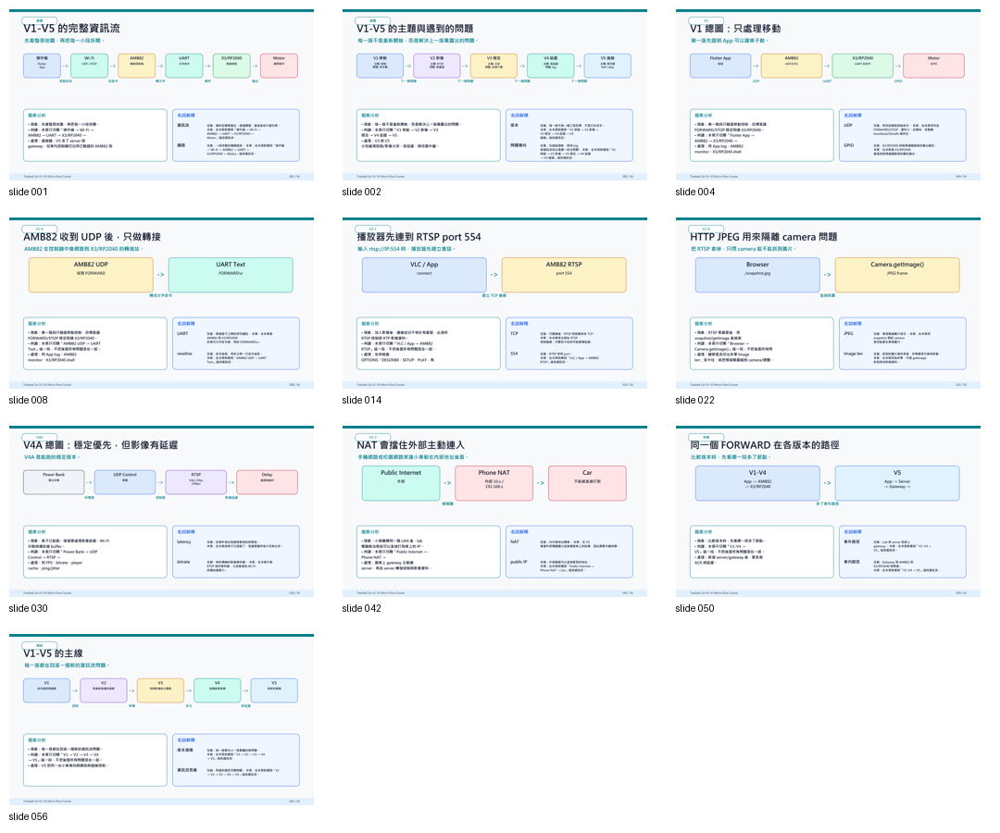
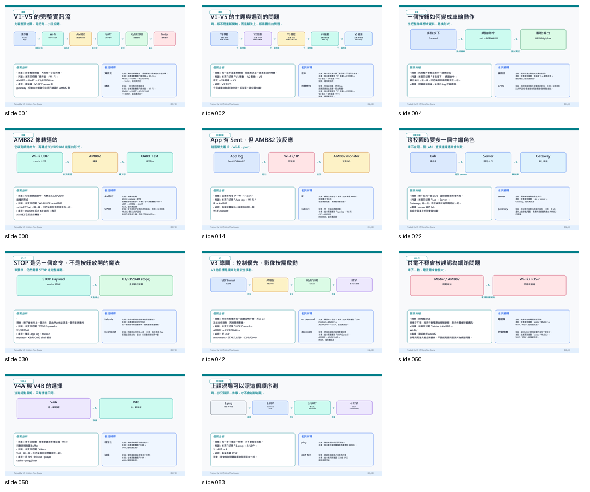

本頁放 56 張基準版與 83 張課堂強化版；逐頁 PNG、教師筆記與產生腳本仍保留在本機 RD 資料夾。
主題 09
本主題把履帶車從 V1 到 V5 的開發歷程整理成教學版。重點不是多背名詞，而是看懂一個按鈕如何經過 UDP、AMB82、UART、X3/RP2040 變成車輪動作，以及 RTSP 影像為什麼會延遲、黑畫面或需要中繼。
點上方名詞會跳到下方圖解與解釋，先看它在控制線或影像線的哪一段。

本頁放 56 張基準版與 83 張課堂強化版；逐頁 PNG、教師筆記與產生腳本仍保留在本機 RD 資料夾。
09 不屬於 Pico 小車核心必修。它適合在學生已理解小車控制後，進一步學習網路控制、影像串流與系統除錯。
Scope
原始資料夾包含多個版本的 PDF、PPTX、學生講義、教師筆記、逐頁 PNG 與產生腳本。公開網站不適合整包放上來，所以本頁保留 56 張基準版與 83 張課堂強化版。
適合學生直接閱讀，也適合教師投影講解 V1-V5 的資訊流主線。
下載 PDF只提供基準投影片，方便教師依課堂時間微調；75/83 張延伸版暫不公開。
下載 PPTX保留給教師備課或轉成課堂講義，不包含教師備註與研發用生成腳本。
下載學生講義在 75 張延伸版基礎上，加入真實 log、V4A/V4B 對照、故障排除總表與實作檢查流程。
下載 83 張 PDF適合教師投影或依課堂時間微調，內容比 56 張基準版更完整。
下載 83 張 PPTX對應課堂強化版投影片，適合學生課後複習資訊流、延遲與故障排除。
下載 83 張版講義83 Slides Preview
如果上課時間較長，或想更完整討論真實 log、V4A/V4B、故障排除與跨網段中繼，可以改用這一版。

83 張版是課堂強化版，不代表所有學生都必須一次讀完；建議教師依班級程度選用。
Info Flow Map
這幾個名詞不是分開背的。控制小車時，UDP 把 App 的命令送進 AMB82，AMB82 再用 UART 轉給 X3/RP2040；看畫面時，AMB82 的 camera 會透過 RTSP 把影像串回 App 或播放器。
UDP 像「很快丟出去的小紙條」。它適合方向控制，因為前進、停止、左轉這類命令需要快速送出；但它不保證每張紙條一定送到，所以要搭配 log 或重複送命令確認。
在本車的位置：App / 電腦 → AMB82。
UART 是兩塊板子之間的序列通訊。可以把它想成 AMB82 收到網路命令後，用一條線把「F、B、L、R、S」這類文字命令傳給負責馬達的控制板。
在本車的位置：AMB82 → X3/RP2040。
RTSP 不是控制命令，而是影像串流的連線方式。它處理的是一連串 frame，所以常見問題會是黑畫面、延遲、buffer、FPS 或 bitrate，而不是「左轉右轉」命令。
在本車的位置：AMB82 camera → App / 播放器。
AMB82 在這台履帶車裡像「前台櫃台」。它接收 Wi-Fi / UDP 控制命令，也處理 camera 與 RTSP 影像；再把需要執行的移動命令轉交給 X3/RP2040。
在本車的位置：網路入口、影像入口、UART 轉接。
X3/RP2040 收到 UART 命令後，負責把命令轉成 GPIO、PWM 或馬達驅動板訊號。也就是說，App 顯示送出成功不代表車一定會動，還要確認這一段有收到並正確執行。
在本車的位置：UART 接收 → GPIO / PWM → 馬達驅動。
File Location
這一章多數檔案是閱讀與授課教材，不是要上傳到 Pico 的 MicroPython 練習檔。
downloads/topic-09-tracked-car-info-flow/
├─ tracked-car-v1-v5-56slides.pdf
├─ tracked-car-v1-v5-56slides.pptx
├─ tracked-car-v1-v5-student-handout.md
├─ tracked-car-v1-v5-83slides-classroom.pdf
├─ tracked-car-v1-v5-83slides-classroom.pptx
└─ tracked-car-v1-v5-83slides-student-handout.mdApp / Computer
└─ UDP command
└─ AMB82
├─ RTSP camera stream
└─ UART command
└─ X3/RP2040
└─ motor driverV1-V5 Route
這一組教材最有價值的地方，是把版本演進當成系統思考：每一版都解決一個真實問題，也帶出下一個限制。
App 按鈕把方向狀態包成 UDP 封包，AMB82 收到後轉成 UART，X3/RP2040 再控制馬達。
學生開始理解影像不是一個命令，而是一串 frame 與 RTSP session。
加入 heartbeat、start-once 與 failsafe，避免控制被影像流程拖住。
用 buffer 換取畫面穩定，但延遲會變大，適合討論可靠度與反應速度的取捨。
降低等待時間，但需要更精準地處理 UI thread、FPS、bitrate 與網路品質。
同一個 Wi-Fi 名稱不代表能直接連。跨網段時通常需要 server、gateway、relay 或 WebRTC 架構。
Two Flows
學生最容易混在一起的是「按了按鈕車不動」和「畫面卡住」。這兩件事可能是不同路徑出問題。
App 按鈕 → UDP 封包 → AMB82 → UART 文字 → X3/RP2040 → GPIO / 馬達驅動板。
適合用來判斷「按鈕有送出，但車不動」到底卡在哪一段。
Camera frame → encoder → RTSP session → RTP/播放器 → 畫面顯示。
適合用來判斷黑畫面、延遲、sf:0、keepalive timeout 或 getImage 卡住。
Classroom Flow
這一章適合用「看路徑、看 log、判斷問題段落」的方式教，而不是一開始就要求學生改所有程式。
讓學生知道 App、AMB82、X3/RP2040、camera、server/gateway 各自扮演什麼角色。
IP 像地址，port 像門口，payload 像信件內容，UART 像兩塊板子之間的簡訊。
App Sent、AMB82 X3:、X3/RP2040 Received 分別對應三段路徑。
讓學生討論穩定與低延遲的取捨，理解工程不是只有一個標準答案。
用 V5 說明為什麼校園網路、NAT、server、gateway 與 WebRTC 會影響遠端控制。
Debug Table
本主題適合訓練學生用 log 與現象定位問題，而不是只重開機或重接線。
| 現象 | 優先檢查 | 教學重點 |
|---|---|---|
| App 顯示 Sent，但 AMB82 沒反應 | IP、port、同網段、UDP 入口 | 送出不等於對方收到 |
| AMB82 有 X3:，但 X3/RP2040 沒 Received | UART 腳位、baudrate、兩板連線 | 網路成功不代表板間通訊成功 |
| X3/RP2040 有 Received，但車不動 | 馬達電源、驅動板、GPIO、boot.py | 命令到達後還要能執行硬體動作 |
| RTSP 可以連，但畫面黑 | camera frame、encoder、sf:0、getImage | RTSP session 成立不等於影像源正常 |
| 畫面穩但慢 | buffer、FPS、bitrate、網路品質 | 穩定與低延遲常常需要取捨 |
Completion Check
這一章的成果不是背會所有協定，而是能用資訊流思考問題。
我能說明 App 按鈕如何變成履帶車的馬達動作。
我知道 RTSP 影像是 frame 與 session，不是一個單純的開關命令。
我能用 App log、AMB82 monitor 和 X3/RP2040 log 判斷卡在哪一段。
我能說明為什麼跨校園控制通常需要 server、gateway 或 relay。
Continue